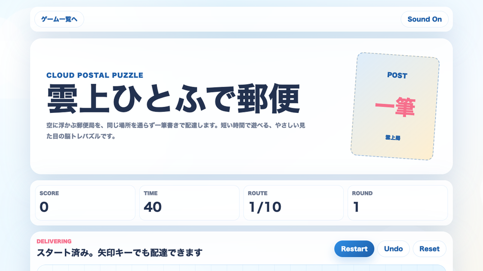

遊び方
- 赤いポストから出発し、隣り合う雲局を一筆でつなぎます。
- 同じ雲局は一度だけ通れます。金のゴールは最後に通る必要があります。
- 次の配達では雲局が増え、ルートの読みが少しずつ難しくなります。
一筆書き / 脳トレ / 無料ブラウザゲーム
雲上ひとふで郵便は、空に浮かぶ郵便局を一筆書きで巡る無料ブラウザゲームです。同じ雲局を二度通らず、赤いポストから出発して金のゴールへ最後に到着しましょう。スマホでもPCでも、短時間の暇つぶしや脳トレに向いています。

端にある雲局を後回しにすると行き止まりになりやすいです。赤いポストから遠い端を早めに拾い、分岐が多い中央を最後の調整に残すと安定します。
一筆書き パズル、無料 ブラウザゲーム 暇つぶし、短時間で遊べる ミニゲーム、インストール不要 ゲームを探している人向けの脳トレゲームです。ルールはシンプルですが、配達先が増えるほど先読みが必要になります。
スマホでは指でなぞる操作、PCではクリックやドラッグ操作で遊べます。通学中や休み時間のリフレッシュにも使いやすい、軽いブラウザゲームです。
見た目はやさしい雲の郵便局ですが、行き止まりを避ける読みが大切です。短い時間でも「もう一便だけ」と試したくなるルート作りが楽しめます。
はい。無料ブラウザゲーム広場で、インストール不要で無料プレイできます。
序盤は短いルートから始まるため、初めてでも遊びやすい難易度です。
はい。タップや指でなぞる操作に対応しています。PCではクリックとドラッグで遊べます。
雲上ひとふで郵便と近い無料ブラウザゲームを、遊び方や端末別の入口から探せます。